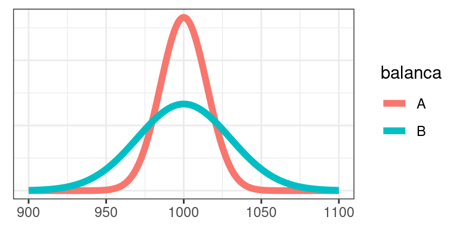
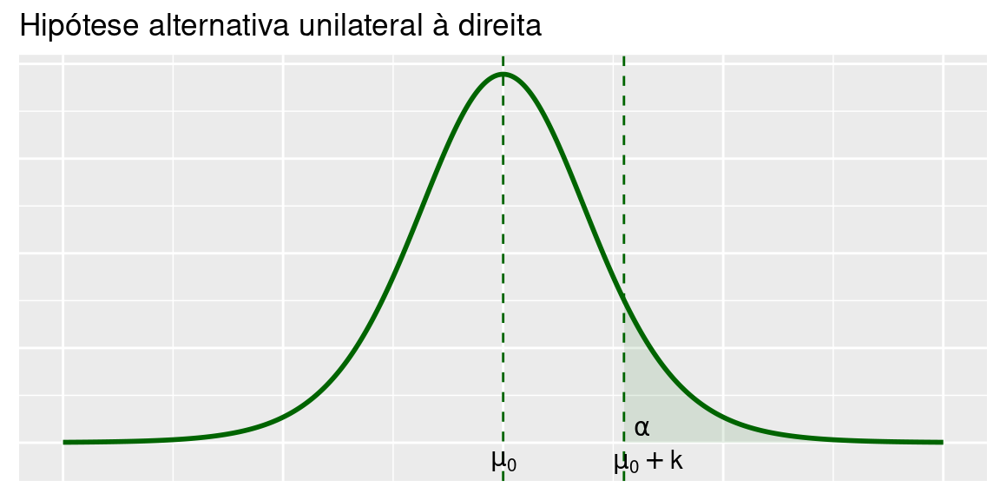
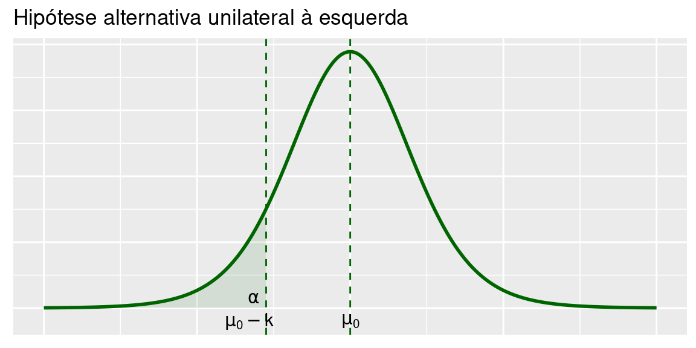
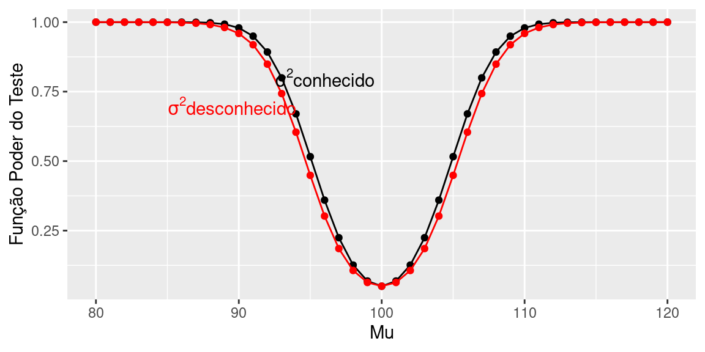

Capítulo 7 Teste de Hipótese: Média de uma \(N(\mu,\sigma^2)\) - \(\sigma^2\) desconhecida
Neste capítulo você completará seu estudo básico de testes de hipóteses sobre a média de uma população, analisando a situação relativa a uma população normal quando não se conhece a variância desta população. Assim como no caso do intervalo de confiança, para testar hipóteses relativas à média de tal população, é necessário estimar essa variância e isso introduz mais uma fonte de variabilidade no procedimento: com uma única amostra, queremos testar hipóteses sobre a média, mas precisamos também estimar a variância da população. O procedimento é simples e análogo aos casos estudados nos caítulos anteriores; o que muda é a distribuição amostral da estatística de teste. Em vez de usarmos a distribuição normal para determinar os valores críticos, usaremos novamente a distribuição t de Student.
7.1 Contexto básico
Considere uma população descrita por uma variável aleatória normal com média \(\mu\) e variância \(\sigma^2\): \(X\sim N(\mu,\sigma^2)\). Nosso interesse é testar hipóteses sobre a média \(\mu\) a partir de uma amostra aleatória simples \(X_1, X_2, \ldots, X_n\). Como visto anteriormente, se a variância \(\sigma^2\) não é conhecida, então temos que usar a estatística
\[T=\sqrt{n}\frac{\bar X-\mu}{S}\]
cuja distribuição \(t\) de Student com \(n-1\) graus de liberdade.
De posse desta estatística de teste, o procedimento de construção do teste é idêntico ao visto anteriormente: identificadas a hipótese nula (sempre na forma de uma hipótese simples \(\mu=\mu_0\)) e a hipótese alternativa, a região crítica é formada pelos valores da estatística de teste pouco prováveis sob \(H_0\). O nível de significância e o tipo de hipótese alternativa permitem a identificação precisa do que são “valores pouco prováveis”: são valores na(s) cauda(s) da distribuição de \(T\) quando a hipótese nula é verdadeira.
7.2 Procedimento geral para construção do teste de hipótese sobre a média de uma \(N(\mu,\sigma^2)\) - \(\sigma^2\) desconhecida
Seja \(X_1,X_2,\ldots,X_n\) uma amostra amostra aleatória simples de uma população \(X\) cuja disribuição é \(N(\mu; \sigma^2)\). Nosso interesse é testar alguma hipótese sobre a média \(\mu\) desta população. Em geral, a variância \(\sigma^2\) não é conhecida e, portanto, vamos estimá-la por
\[S^2=\frac{1}{n-1}\sum_{i=1}^n \left(X_i-\bar X\right)^2\]
Lembre-se que \(S^2\) é um estimador não-viesado de \(\sigma^2\).
7.2.1 Hipótese nula e hipótese alternativa
A hipótese nula que iremos considerar será
\[H_0:\mu=\mu_0\]
As possíveis formas da hipótese alternativa são:
- Bilateral: \(H_1:\mu\ne\mu_0\)
- Unilateral à direita: \(H_1:\mu > \mu_0\)
- Unilateral à esuqerda: \(H_1:\mu < \mu_0\)
Como antes, a escolha entre essas três possibilidades se faz com base no conhecimento do problema. Se não temos informação alguma sobre a alternativa, temos que usar um teste bilateral.
7.2.2 Estatística de teste, erros, regra de decisão
Como o teste é sobre a média de uma população normal, a estatística amostral que deve ser utilizada é \(\bar X\). Como a variância populacional não é conhecida, sabemos que
\[T=\frac{\bar X-\mu}{\frac{S}{\sqrt n}} \sim t(n-1)\]
e é a nossa estatística de teste.
A regra de decisão consiste em definir a região crítica RC como o conjunto de valores cuja probabilidade de ocorrência é pequena sob a hipótese de veracidade de \(H_0\). Logo, nossa regra de decisão se baseia na estatística de teste
\[T_0=\frac{\bar X-\mu_0}{\frac{S}{\sqrt n}} \sim t(n-1)\]
Como a estatística de teste segue uma distribuição t de Student, valores com pequena probabilidade de ocorrência estão nas caudas da distribuição. Isso equivale a valores de \(\bar X\) “distandes” de \(\mu_0\). Assim, a região crítica para cada tipo de hipótese alternativa é definida como segue:
- Bilateral: \(T_0 < -k\) ou \(T_0 > k\)
- Unilateral à direita: \(T_0 > k\)
- Unilateral à esuqerda: \(T_0 < -k\)
Nas Figuras abaixo ilustram-se as regiões críticas para cada tipo de hipótese alternativa.



7.2.3 Nível de significância e região crítica
O procedimento usual de teste de hipótese consiste em se fixar o nível de significância \(\alpha\), que, por definição, é a probabilidade de se cometer o erro tipo I:
\[\alpha = P(\text{erro tipo I}) = P(\text{rejeitar }H_0|H_0\text{ é verdadeira})\]
Assim, para cada tipo de hipótese alternativa a região crítica é identificada impondo-se a condição \(P(T \in RC|H0\text{ é verdadeira}) = \alpha\)
7.2.3.1 Teste bilateral
A região crítica é calculada como:
\[ \begin{aligned} \alpha&=P\left[T_0<-k\right|T_0\sim t(n-1)]+P\left[T_0>k\right|T_0\sim t(n-1)]\\ \alpha&=2\times P\left[T_0<-k\right|T_0\sim t(n-1)]\\ \frac{\alpha}{2}&=P\left[T_0>k\right|T_0\sim t(n-1)] \end{aligned} \]
Usando a notação \(t_{n;\alpha}\) para denotar a abcissa da distribuição \(t\) de Student com \(n\) graus de liberdade que deixa área (probabilidade) \(\alpha\) acima dela, resulta a seguinte região crítica para o teste bilateral:
\[T_0<-t_{n-1;\frac{\alpha}{2}}~~~~~~\text{ou}~~~~~~T_0>t_{n-1;\frac{\alpha}{2}}\]
Essa região crítica também pode ser escrita de outra forma usando a seguinte equivalência:
\[T_0<-t_{n-1;\frac{\alpha}{2}}\Longrightarrow \frac{\bar X-\mu_0}{\frac{S}{\sqrt n}}<-t_{n-1;\frac{\alpha}{2}}\Longrightarrow\bar X<\mu_0-t_{n-1;\frac{\alpha}{2}}\frac{S}{\sqrt n}\]
\[T_0>t_{n-1;\frac{\alpha}{2}}\Longrightarrow \frac{\bar X-\mu_0}{\frac{S}{\sqrt n}}>t_{n-1;\frac{\alpha}{2}}\Longrightarrow\bar X>\mu_0+t_{n-1;\frac{\alpha}{2}}\frac{S}{\sqrt n}\]
7.2.3.2 Teste unilateral à direita
A região crítica é calculada como:
\[ \begin{aligned} \alpha&=P\left[T_0>k\right|T_0\sim t(n-1)]\\ t_{n-1;\alpha}&=k \end{aligned} \]
ou seja, a região crítica é
\[T_0 > t_{n-1;\alpha}\]
ou equivalentemente
\[\bar X>\mu_0+t_{n-1;\alpha}\frac{S}{\sqrt n}\]
7.2.3.3 Teste unilateral à esquerda
De forma análoga, obtém-se a seguinte região crítica para o teste unilateral à esquerda:
\[T_0 <- t_{n-1;\alpha}\]
ou equivalentemente
\[\bar X<\mu_0-t_{n-1;\alpha}\frac{S}{\sqrt n}\]
7.2.4 Exemplo 1
Depois de uma pane geral no sistema de informação de uma empresa, o gerente administrativo deseja saber se houve alteração no tempo de processamento de determinada atividade. Antes da pane, o tempo de processamento podia ser aproximado por uma variável aleatória normal com média de 100 minutos. Uma amostra de 16 tempos de processamento após a pane revela uma média \(\bar x = 105,5\) minutos e um desvio padrão \(s = 10\) minutos. Ao nível de significância de 5%, qual é a conclusão sobre a alteração do tempo médio de processamento?
Como visto, as hipóteses do problema são:
\[ \begin{cases} H_0:\mu=\mu_0 \\ H_1:\mu\ne\mu_0 \end{cases} \]
Como a variância não é conhecida, temos que usar a distribuição \(t\) de Student com \(n-1=16-1=15\) graus de liberdade. Para um teste bilateral com nível de significância de 5%, a abscissa de interesse é aquela que deixa área de \(0,025\) acima. Consultando a Tabela, resulta
\[t_{15;0,025}=2,131\]
A estatística de teste é
\[T_0=\frac{\bar X -100}{\frac{10}{\sqrt{16}}}\sim t(15)\]
e a região crítica é
\[T_0<-2,131~~~~\text{ou}~~~~T_0>2,131\]
O valor observado da estatísitca de teste é
\[T_0=\frac{105,5 -100}{\frac{10}{\sqrt{16}}}=2,2\]
Como esse valor pertence à região crítica, rejeitamos a hipótese nula e concluímos que houve alteração no tempo de processamento após a pane.
Em termos da média amostral, a região crítica é
\[\bar X<100-2,131\times\frac{10}{\sqrt{16}}~~~~\text{ou}~~~~\bar X>100+2,131\times\frac{10}{\sqrt{16}}\]
ou
\[\bar X<105,33~~~~\text{ou}~~~~\bar X>94,673\]
Comparando com a Região Crítica obtida no Exemplo 1 da seção anterior (\(\bar X < 95.1\text{ ou }\bar X > 104.9\)), note que com o mesmo nível de significância, a região crítica no caso de variância desconhecida é mais extrema, refletindo a maior variabilidade da distribuição t-student.

Para calcular o p-valor:
\[ \begin{aligned} p-valor &= 2\times P\left(\bar X>105,5 \Big| \frac{\bar X-100}{\frac{10}{\sqrt 16}} \sim t(15)\right)\\ &= 2\times P\left(t(15)>\frac{105,5-100}{\frac{10}{\sqrt 16}}\right)\\ &= 2\times P\left(t(15)>2,2\right)\\ &= 2\times 0, 02195 = 0, 0439 \end{aligned} \]
Como \(p-valor < 0,05\), rejeitamos \(H_0\) ao nível de significância de 5%.